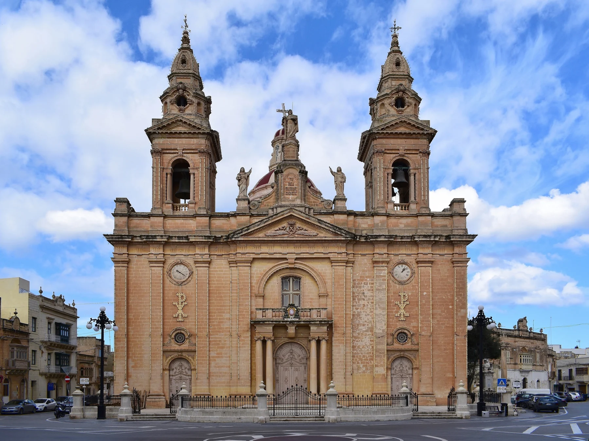

Useful for understanding the historic centre. It does not prove that a listing sits beside the church or on an older street.

ĦAL LUQA · MALTAVillage streets.
Village streets.
Aviation history.
Ħal Luqa's parish centre, residential streets, Ħal Farruġ and the airport or aviation area are different contexts. The locality name connects them administratively; it does not make every home an airport property.
READ THE LOCALITY PRECISELY
Start with the village, then locate the street.
The parish church and older streets establish a civic centre. Malta International Airport and its business area form a separate context. Exact street information still determines traffic, parking, errands and useful public transport.
Airport history belongs in the Luqa story, but terminal proximity, flight path, noise and access require exact evidence.
Do not collapse Ħal Farruġ, the village centre and aviation or business areas into one generic location description.
A bus corridor is not a property journey.
Malta Public Transport currently publishes Route 208 through Luqa and the airport corridor. Use the live operator page for departures, diversions and connections rather than relying on frozen brochure times.
The exact street answers the practical questions.
Confirm evening traffic, parking arrangement, pavement continuity, entrance access, nearest useful stop and the actual route to regular errands. A Luqa label or locality centroid cannot answer them.
EVERYDAY ORIENTATION
Use durable public anchors, then verify locally.
The council, live transport page and public health service provide a responsible first check. Shops, operators and street-level convenience still need current verification.
Ħal Luqa Local Council
Use the official council site for current notices and local administration rather than freezing service details into a brochure.
Kirkop Health Centre
Primary HealthCare currently includes Luqa in this centre's catchment. Check its live page for services, eligibility and opening information.
Route 208
This establishes a current operator corridor only. It does not guarantee a frequency, connection, nearest stop or property-specific journey time.
Verify the exact street
No durable grocery anchor was established in this research pass. Check current shops and the actual walking environment from the property.
ACTIVITIES, IN SEPARATE CONTEXTS
Village history and aviation history need different plans.
St Andrew's parish belongs to Ħal Luqa's civic core. The aerodrome, terminal and airport-business zone tell a second story at a different scale. Neither context proves a property's flight path, noise level, terminal access or view.
St Andrew's parish context
Use the parish and older streets to understand the civic centre after checking current access. They do not place every Luqa address near the church or create a ready-made walking route.
All-weather aerodrome, 1940
Transport Malta records Luqa aerodrome entering operation on 1 April 1940. This is an aviation-history marker, not a statement about today's aircraft movements around any home.
1992 and 1998 milestones
The official timeline records the new terminal's inauguration in 1992 and Malta International Airport plc taking operational management in 1998. Check present visitor information separately.
Airport, business area, Ħal Farruġ
These contexts should be named rather than folded into the village centre. Plan each destination with its own current access information and do not infer proximity from a Luqa label.
FOOD, WITHOUT RANKINGS
Three licensed records across two Luqa contexts.
The Malta Tourism Authority's Luqa filter still returned three restaurant records when rechecked on 27 October 2026; the register itself reports an update on 26 October. Licensing supports a name and registered address only, not quality, price, service style or today's opening hours.
Antalya Kebab Restaurant
The current register places this record on Triq San Tumas. Confirm the menu, trading status and service directly; the address is not a property-specific proximity claim.
Take Off Restaurant
The register also places Take Off Restaurant on Triq San Tumas, with postcode LQA 9031. A shared street field does not establish the route from a home.
Vecchia Napoli
This record is at Level 0, SkyParks Business Centre on Vjal l-Avjazzjoni. Keep that airport-business address separate from the village-centre food context and verify current service before going.
Open the broad locality overview only when you need it.
The map frames Ħal Luqa, the airport area and surrounding place labels for orientation. It deliberately draws no boundary, route, distance, travel time or listing location and loads from OpenStreetMap only after your click.
Malta Address Registrar · Ħal Luqa Local Council · Archdiocese parish page · Transport Malta aviation history · Kirkop Health Centre · MPT Route 208 · MTA restaurant register. Volatile service details require a fresh check.
Neighbourhood edition. No ranking, fixed opening hour, property-specific distance, guaranteed view, aircraft-noise claim, flight-path claim, parking claim, accessibility promise, route or journey time is implied.
Continue with the Marsa, Paola (Raħal Ġdid), Żurrieq and Birżebbuġa editions, or return to all neighbourhoods.